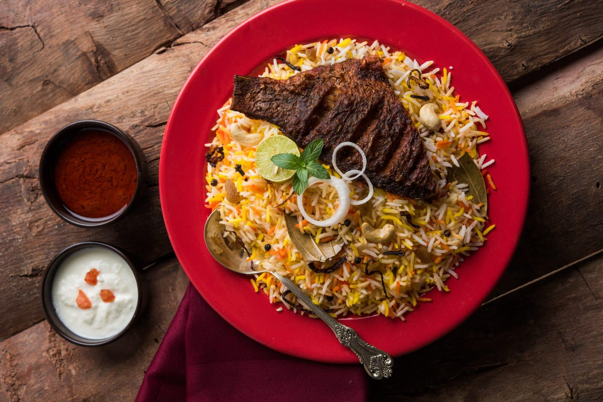

Best meal in world
Biryani is a highly aromatic, mouth-watering staple dish that needs no introduction.

Unlimited
Biryani is a highly aromatic, mouth-watering staple dish that needs no introduction.

Too tasty
Biryani is a highly aromatic, mouth-watering staple dish that needs no introduction.